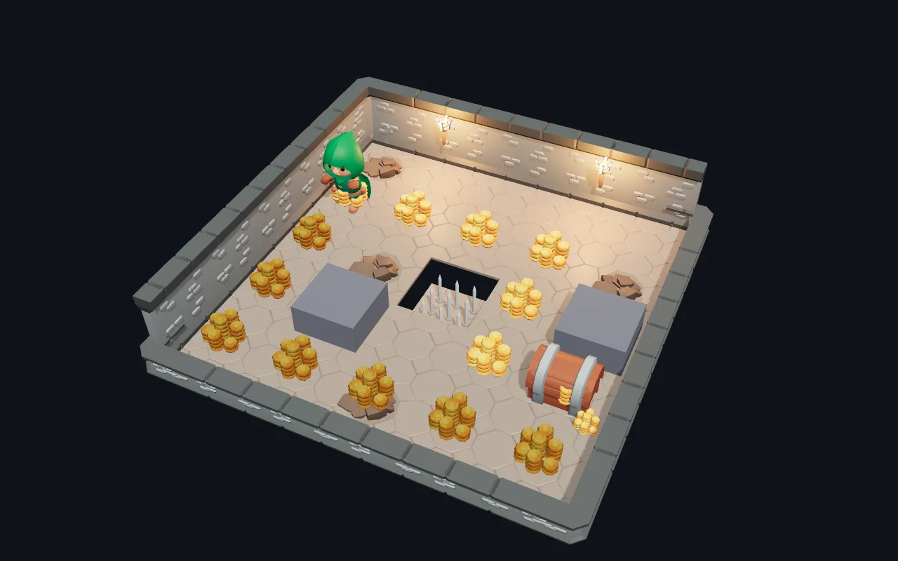
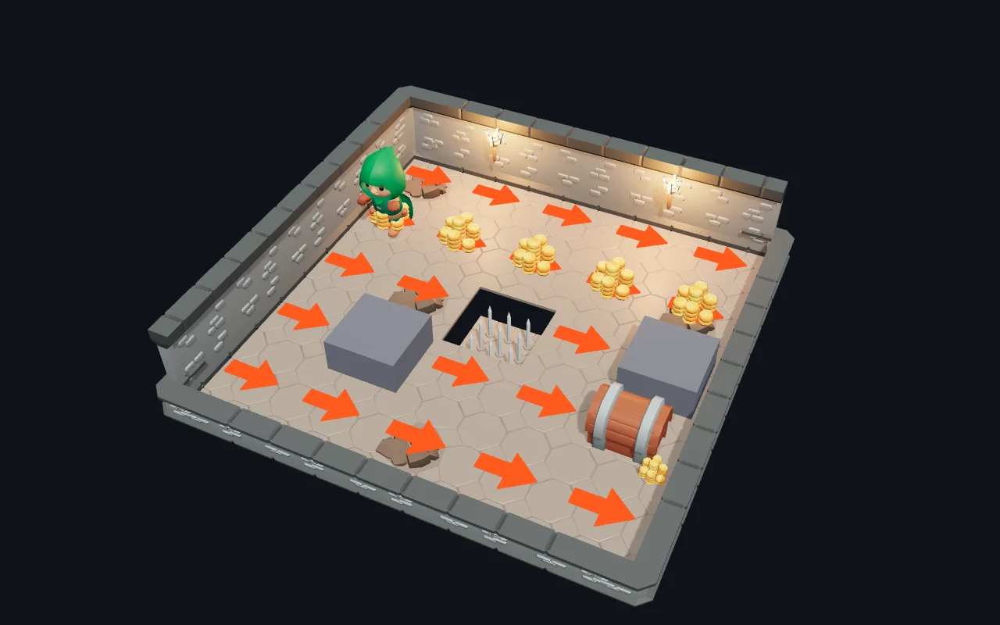
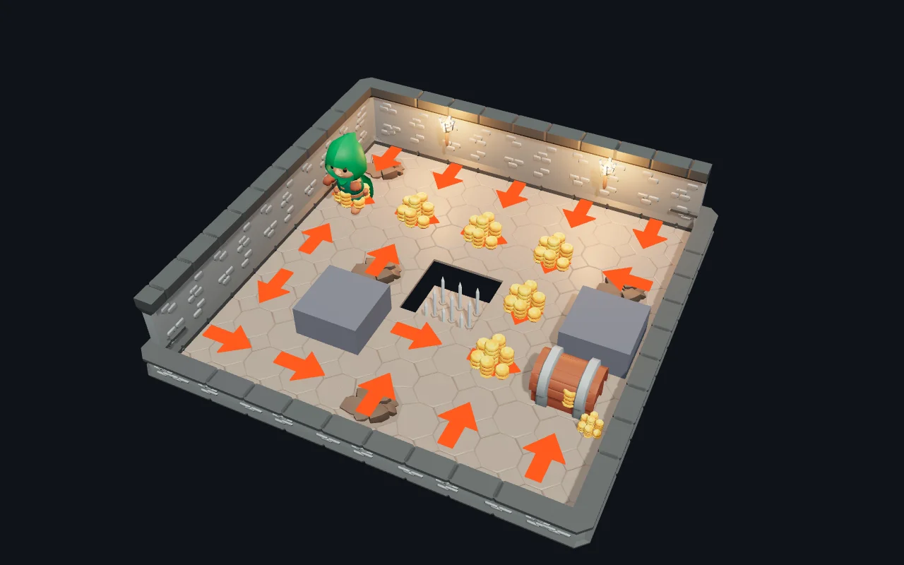
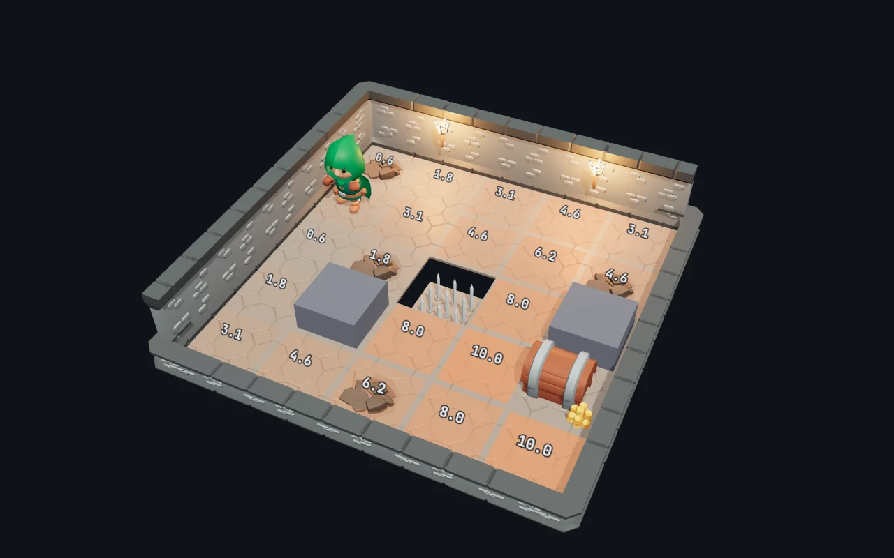
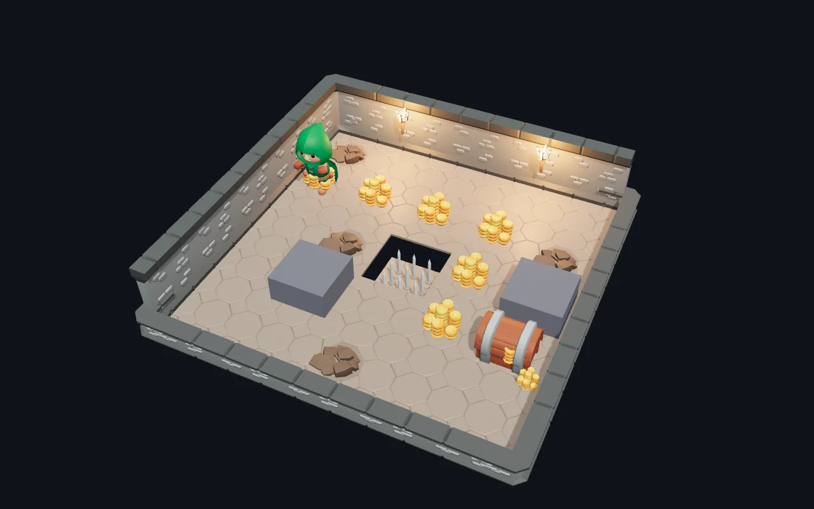
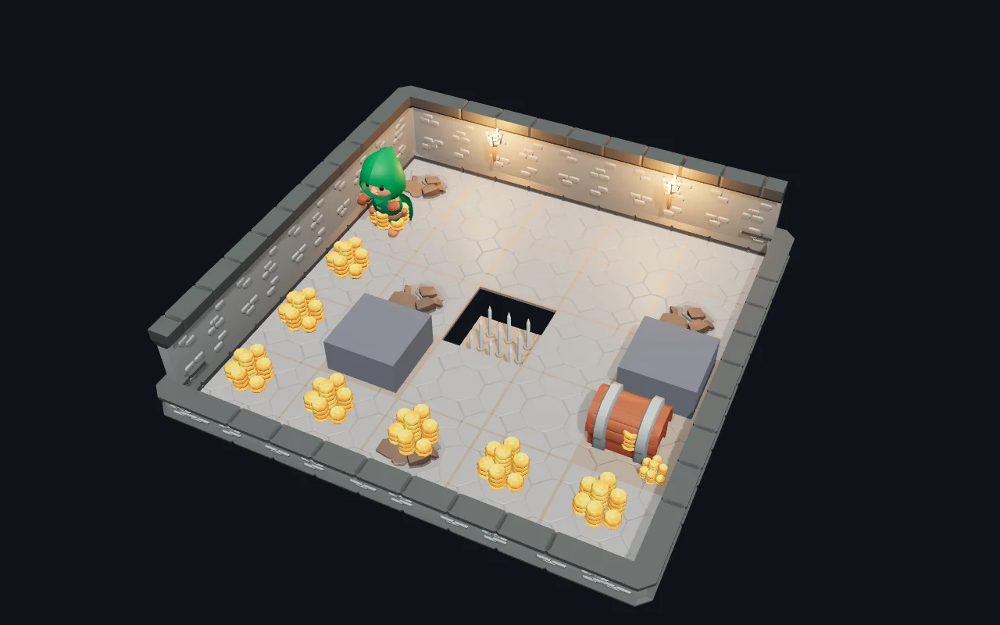

Treasure Room · How it works
Six ideas in one small room
A robot stands in a five by five room with a treasure, a pit and a few walls. The room never explains itself: it only says where the robot is and how many points it just got. From that alone, six ideas of reinforcement learning fall out, one level each.
01
The agent and the room
The robot is the agent. The room is its environment. Each turn the agent sends one action, up, down, left or right, and the room sends back two things: the tile the robot is now on, and a reward. Nothing else crosses over.
The treasure pays +10, the pit costs 10, and every other step costs 1, even a bump into a wall. So wandering is never free.
The lessonThe AI only knows what the room tells it.
02
State, action, reward
Write down one step and you get three things: the state the robot was in, the action it took, and the reward that came back. Play a whole game and you have a list of them. That list is all the AI ever learns from.
The lessonThe game is a list of these: state, action, reward.
03
Return and the discount
The return of a route is its rewards added up. Here the short way takes steps and the detour takes , so the short way keeps more of the treasure.
The discount shrinks each later reward by a number between 0 and 1 for every step it is away. Set it low and the treasure at the end of a walk is hardly worth anything: the AI turns greedy for now.

| Discount | Short way | Detour | Treasure worth |
|---|
The lessonShorter paths win, and a low discount makes the AI greedy for now.
04
A policy is a rulebook
A policy says what to do on each tile. In this room it is one arrow per tile. A rulebook of all-right arrows looks tidy and gets the robot nowhere. A good one points every tile the right way.
All arrows right

Arrows after the AI fixes them

The lessonA policy is: on this tile, do this.
05
Value spreads outward
The value of a tile is the return the robot can expect if it stands there and plays well. Start with zero everywhere. One sweep lets every tile look at its neighbours and take the best one. The tile next to the treasure learns it is worth something, then the tile beside that, and the news spreads outward one step per sweep.
After 2 sweeps

After sweeps

The lessonValue is how good it is to stand here.
06
The icy floor
Everything so far assumed a move always works. Make the floor icy and a move works 80% of the time and slips to each side 10%. Now the pit is a real risk, and the plan changes.
Five parts describe such a world: the states, the actions, the rewards, the slip chance and the discount. Together they are a Markov decision process, or MDP.
Dry floor

Icy floor

- The dry plan passes next to the pit, with a start value of . Walked on ice times, it falls in .
- The icy plan keeps away from the pit, with a start value of . Walked on ice times, it falls in .
The lessonThe best plan changes once moves are uncertain.
What it has and has not learned
- Nothing here is trained. The plans come from value iteration on a room the program already knows. A real learner has to find these numbers by trying.
- It is one room. Change the walls and every figure changes with it.
- The figures come from one recorded run (seed ), so they are the same on every visit.
Your turn
The AI only knows what the room tells it.
On the live page, change the discount, redraw the arrows, and turn the floor icy.
Try it live